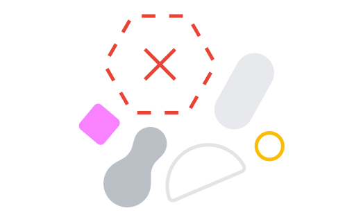

<!--
Copyright 2018 The Chromium Authors
Use of this source code is governed by a BSD-style license that can be
found in the LICENSE file.
-->

<style include="oobe-dialog-host-styles">
  paper-progress {
    --paper-progress-active-color: var(--cros-slider-color-active);
    --paper-progress-container-color: var(--cros-slider-track-color-active);
    --paper-progress-secondary-color: var(--cros-slider-color-active);
    height: 3px;
    width: 100%;
  }
</style>
<oobe-adaptive-dialog id="managementTransitionDialog" role="dialog"
    aria-label$="[[getDialogTitle_(locale, arcTransition_, managementEntity_)]]"
    for-step="progress">
  <iron-icon slot="icon" icon="oobe-32:enterprise" aria-hidden="true"
    hidden="[[isChildTransition_(arcTransition_)]]">
  </iron-icon>
  <iron-icon slot="icon" src="images/supervision_icon.png"
    aria-hidden="true" hidden="[[!isChildTransition_(arcTransition_)]]">
  </iron-icon>
  <h1 slot="title">
    [[getDialogTitle_(locale, arcTransition_, managementEntity_)]]
  </h1>
  <div slot="subtitle">
    [[i18nDynamic(locale, 'managementTransitionIntroMessage')]]
  </div>
  <div slot="content" class="flex layout vertical center-justified"
      aria-live="off">
    <paper-progress class="slow" aria-hidden="true" indeterminate>
    </paper-progress>
  </div>
</oobe-adaptive-dialog>
<oobe-adaptive-dialog id="managementTransitionErrorDialog" role="dialog"
    aria-label$="[[i18nDynamic(locale,'managementTransitionErrorTitle')]]"
    for-step="error">
  <iron-icon slot="icon" icon="oobe-32:enterprise" aria-hidden="true"
    hidden="[[isChildTransition_(arcTransition_)]]">
  </iron-icon>
  <iron-icon slot="icon" src="images/supervision_icon.png"
    aria-hidden="true" hidden="[[!isChildTransition_(arcTransition_)]]">
  </iron-icon>
  <h1 slot="title">
    [[i18nDynamic(locale, 'managementTransitionErrorTitle')]]
  </h1>
  <div slot="subtitle">
    [[i18nDynamic(locale, 'managementTransitionErrorMessage')]]
  </div>
  <div slot="content" class="flex layout vertical center center-justified">
    
  </div>
  <div slot="bottom-buttons">
    <oobe-text-button id="accept-button" on-click="onAcceptAndContinue_"
        text-key="managementTransitionErrorButton" class="focus-on-show"
        inverse>
    </oobe-text-button>
  </div>
</oobe-adaptive-dialog>

